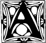
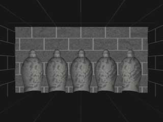
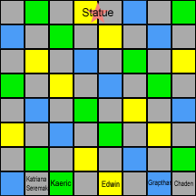
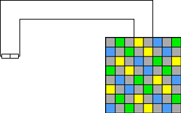
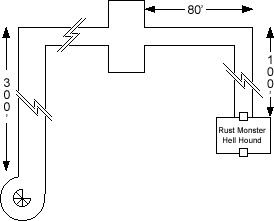

Chapter 3: A Game of Kings


dvancing past the slain gnolls, the corridor led another 80 feet before ending in a wall with five vaguely humanoid-shaped alcoves surrounded by decorative scrollwork. Chaden searched the alcoves, finding some sort of mechanism which she did not believe was a trap. Seremak, Chaden, and Edwin stepped into three of the alcoves. Because only Edwin stepped backwards into the nook, only Edwin found himself suddenly wrapped in metal bands. The alcove spun around and dropped out of sight, while a new alcove snapped in to replace it.
Fearing for the wizard, Seremak and Chaden quickly turned around to back into their alcoves, and were similarly whisked away. The rest of the party followed.

The group found themselves at the edge of what could only be described as
a life-sized chess board. Katriana and Seremak were familiar with the game. Tiles on the floor alternated grey and either yellow, blue, or green. On the far end of the board straddling the spaces of the opposing king and queen stood a richly detailed seven foot tall human statue. Its left hand rested on the pommel of a longsword at its side while the right palm outstretched as if to say "stop". The statue wore a crown and was richly bejeweled.
Each of the five alcoves deposited the character on a different space. Based on their starting spaces Seremak, Katriana, and Grapthar would be Knights, Kaerick a Bishop, Chaden a Rook, and Edwin a King. This was confirmed when Seremak tried to move one space diagonally (disallowed for a Knight); after a moment the space to which he moved flashed red and Seremak took 5 hit points of damage.
| Player: | Edwin to King's Bishop 2. |
| DM: | After a moment the square Edwin has moved to glows white while the square he moved from returns to its former color. |
| Player: | Edwin to King's Bishop 3. |
| DM: | The new square glows white and the old square turns back. |
| Player: | Edwin to King's Bishop 4. |
| DM: | Same thing. |
| Player: | Edwin to King's Bishop 5. |
| DM: | Yup. |
| Player: | Edwin to King's Bishop 6. |
| DM: | Could we move this along? |
The Narrator
Edwin advanced to one of the squares occupied by the statue. Peering closely, he noticed the faint outlines of a panel in its chest. Chaden, moving across the chessboard as a Rook, paused on the other side of the statue and determined that the panel could be opened via a concealed mechanism. After a few tries Edwin determined that slapping the outstretched palm of the statue caused the panel to open. Inside was the second segment of the key.


A hallway continued past the chessboard, leading to a set of huge metal doors inset with a square channel, identical to that found in the previous tower. Thinking that they might in fact be the same doors via some sort of extra-dimensional magic, Chaden made her mark on the left door with chalk.
Determined to continue to the next tower immediately, the party walked with reckless abandon back across the chessboard and into the alcoves at the other side. Retracing their steps the party took a running start at the beaded curtain. Six bugbears waited in ambush on the other side.
Katriana
The Bugbears caught us by surprise, and mauled Grapthar severely as he stepped through the curtain. Very strong but clumsy, one of the creatures impaled his own foot with his morning star in his eagerness to crush us. Even so, in hindsight I believe that Call Lightning was severe overkill. In the future against such foes I shall resolve to use a more appropriate amount of kill.
Above ground once more we walked toward the third ruined tower. There we got a special treat. Three brown bears, Animalia Chordata Vertebrata Mammalia Carnivora Ursidae Ursinae Ursus Arctos if I am not mistaken, were ambling across the central courtyard. Beautiful creatures, apparently a familial unit though it is quite rare for the male of the species to contribute to parental care.
The Narrator
Edwin distracted Grapthar, who might otherwise have seen the creatures as a threat and charged into battle. The party sans Katriana ducked out one of the numerous breaches in the outer wall, keeping the ruined stone between themselves and the bears while Katriana watched for signs of aggression.

The third tower looked very much like the first two, the upper stories having collapsed leaving only a spiral staircase descending into an underground chamber. The party passed through several very long hallways and an empty room before arriving at a wooden door bound with iron. Chaden found no traps on the door, so Seremak opened it and stepped through. As soon as he had stepped fully into the room there resounded a sizzling pop, and a squat creature appeared from nowhere. Katriana identified it as a Rust Monster, prompting Seremak (and everyone else) to fear for their weapons. Chaden and Edwin began peppering it with ranged attacks.
Seremak sidled along the wall to keep some distance between himself and the Rust Monster. After a few steps there was another sizzling crack, and a Hell Hound appeared. The Hound charged, singing Seremak slightly. The Rust Monster, somewhat slower, also charged but missed Seremak and his gear. Discretion being the better part of valor Seremak backed out of the room, with the two creatures closely pursuing. Edwin slammed the door in the nick of time with a close cantrip. The party hurriedly readied missile weapons even as the bottom half of the door charred and one of the hinges instantly rusted away.
WILL OUR HEROES SURVIVE THIS ENCOUNTER?
WILL THEIR EQUIPMENT SURVIVE THE RUST MONSTER?
TUNE IN NEXT TIME TO FIND OUT.
Prev: Wallow (noun): To Be Indecisive |
Entrance |
Next: One Manticore, Medium Well
Experience awarded for the past two sessions:
Everyone goes up one level.